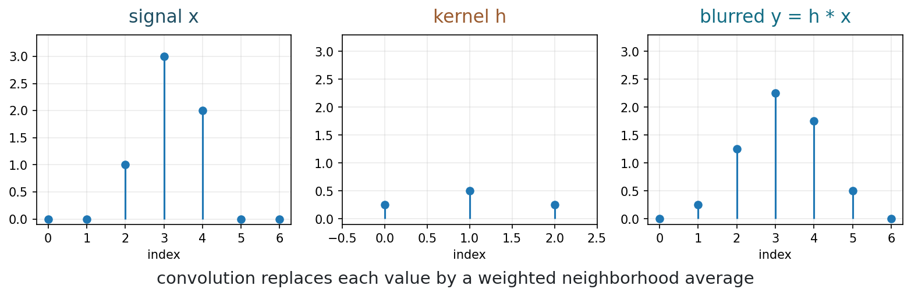
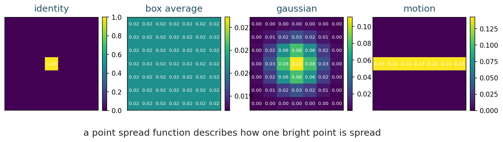
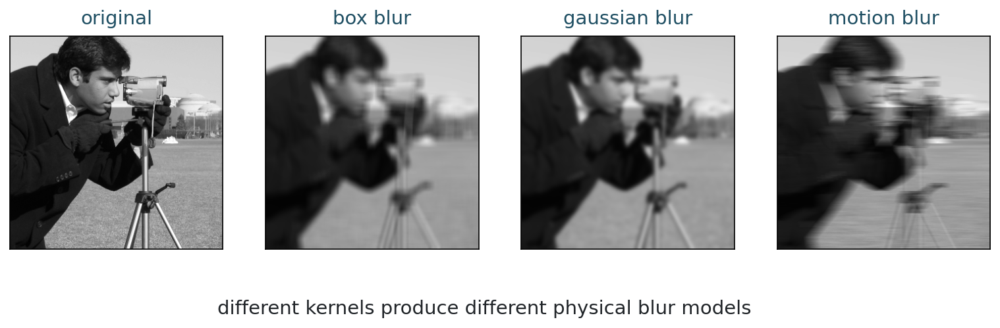
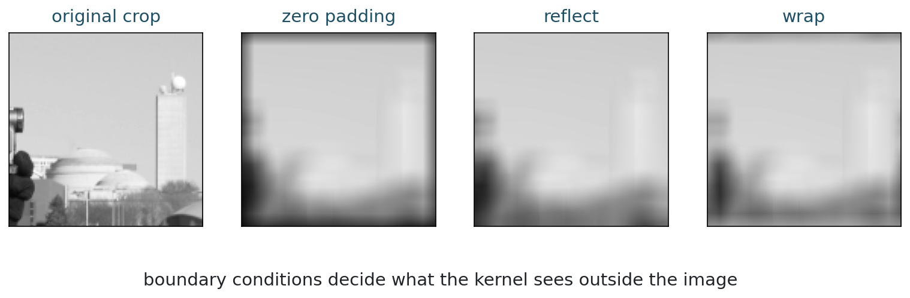
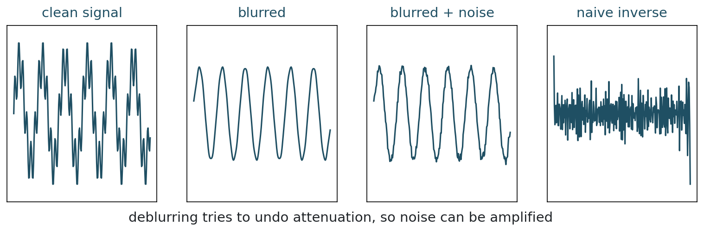

MATH 435: Mathematical Imaging - Week 2
2001-02-01
From pixels to operators
What does it mean, mathematically, for an image to be blurred?
| Time | Work |
|---|---|
| 0-10 min | review fixed forward models |
| 10-25 min | 1D convolution by hand |
| 25-40 min | 2D convolution and PSF |
| 40-55 min | real image blur demo |
| 55-65 min | boundary conditions |
| 65-72 min | why deblurring is hard |
| 72-75 min | exit checkpoint |
For a fixed measurement rule, we often write
y = Ax + \eta.
Today, A will be a blur operator.
The blur kernel is assumed fixed. That is different from unknown scene occlusion or nonlinear visibility.
First in one dimension
Convolution as a weighted neighborhood average
Suppose a signal is noisy or sharp at one point. A simple smoothing rule is:
y_i = \frac{1}{4}x_{i-1} + \frac{1}{2}x_i + \frac{1}{4}x_{i+1}.
The output at index i is built from a small neighborhood of the input.
The weights
h = \begin{bmatrix} \frac{1}{4} & \frac{1}{2} & \frac{1}{4} \end{bmatrix}
are called a convolution kernel.
What should happen if the weights sum to 1?
8 minutes
Let
x = \begin{bmatrix} 0 & 0 & 1 & 3 & 2 & 0 & 0 \end{bmatrix}
and h = [1/4, 1/2, 1/4].
Compute the output at the central indices using zero values outside the signal.
For the peak location,
y_4 = \frac{1}{4}x_3 + \frac{1}{2}x_4 + \frac{1}{4}x_5 = \frac{1}{4}(1) + \frac{1}{2}(3) + \frac{1}{4}(2) = 2.25.
The peak is reduced, and its mass is spread to neighboring locations.

One common discrete convention is
(h * x)_i = \sum_{k} h_k x_{i-k}.
For symmetric kernels, convolution and correlation give the same result. For nonsymmetric kernels, the sign convention matters.
For a fixed kernel h, convolution is:
Linear
h*(a x + b z) = a(h*x) + b(h*z)
Local
Each output uses nearby values.
Shift-invariant
The same rule is applied everywhere.
From signals to images
A kernel becomes a small image
For an image x[i,j] and a kernel h[a,b]:
y[i,j] = (h*x)[i,j] = \sum_{a,b} h[a,b] x[i-a,j-b].
The output pixel is a weighted combination of nearby input pixels.
PSF
The point spread function describes how the imaging system records a single ideal bright point.
If one point becomes a small blob, then every point in the image is spread in the same way.

| Kernel | Visual effect | Typical model |
|---|---|---|
| identity | no blur | perfect sampling |
| box average | blocky smoothing | simple local average |
| gaussian | smooth blur | defocus or optical smoothing |
| motion | directional streak | camera or object motion |
If h is fixed, then
y = h * x
is a linear operator on the image.
This is a controlled blur model. It does not say all visual image formation is linear.
Now look at pixels
Different kernels, different blur

Blur removes local contrast:
Discussion
Which blur looks easiest to undo? Which looks hardest?
From the repository root:
The first command prints numerical outputs. The second regenerates the figures used in this deck.
For many blur kernels, we impose
\sum_{a,b} h[a,b] = 1.
This preserves the average brightness of the image.
2 minutes
If a 3 \times 3 box blur has equal weights, what is each weight?
What happens if the weights sum to 2 instead of 1?
The edge of the image
What does the kernel see outside the image?
Near the image boundary, a kernel asks for pixels that do not exist.
For example, at the top-left pixel:
y[1,1] = \sum_{a,b} h[a,b] x[1-a,1-b].
Some indices fall outside the image.
| Mode | Outside value | Possible artifact |
|---|---|---|
| zero padding | black outside | dark borders |
| reflect | mirror image | smoother edges |
| wrap | periodic image | artificial wraparound |
| crop/valid | do not compute boundary | smaller output |

6 minutes
For each application, choose a boundary condition and justify it:
Back to Week 1
Convolution is a linear operator when the kernel is fixed
For a four-pixel 1D signal, same-size output, zero boundary conditions, and h = [h_{-1}, h_0, h_1]:
y = \begin{bmatrix} h_0 & h_1 & 0 & 0 \\ h_{-1} & h_0 & h_1 & 0 \\ 0 & h_{-1} & h_0 & h_1 \\ 0 & 0 & h_{-1} & h_0 \end{bmatrix} x.
The blur matrix has repeated diagonals because the same local rule is applied at each position.
What changes in this matrix if we use periodic boundary conditions?
The inverse problem appears
If blur is linear, why not just invert it?
If
y = Ax + \eta,
then the tempting answer is
x = A^{-1}y.
What could go wrong here?

Deblurring can fail because:
Fourier analysis will make this precise in the next lectures.
Some blur is well modeled as fixed convolution.
Other image degradations are not simple convolution:
Discuss
You receive a blurry photo from a phone camera.
What evidence would make you believe the blur is approximately convolutional?
What evidence would make you reject the convolution model?
For each item, give one sentence:
| Question | Short answer |
|---|---|
| PSF | image of one ideal point after the imaging system |
| kernel sum | preserves average brightness |
| boundary | zero, reflect, wrap, valid/crop |
| noise | inverse filtering amplifies weak frequencies |
Fourier transform in imaging:
MATH 435: Mathematical Imaging